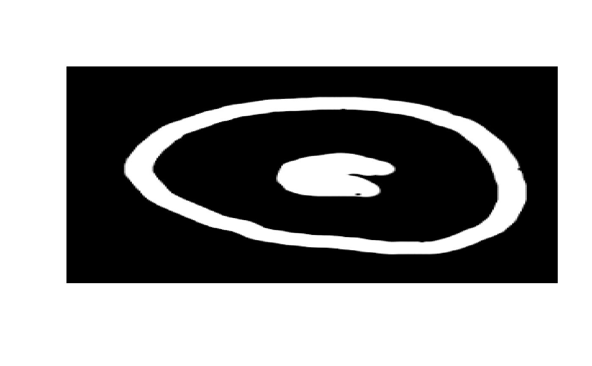

Read tif stacks
readTIF(file = file.choose(), native = FALSE, as.is = FALSE, channels = NULL)
| file | Name of the file to read from. Can also be an URL. |
|---|---|
| native | determines the image representation - if FALSE (the default) then the result is an array, if TRUE then the result is a native raster representation (suitable for plotting). |
| as.is | attempt to return original values without re-scaling where possible |
| channels | number of channels |
3d or 4d array
# \donttest{ kringel <- readTIF(system.file("extdata","kringel.tif",package="bioimagetools")) img(kringel)# }